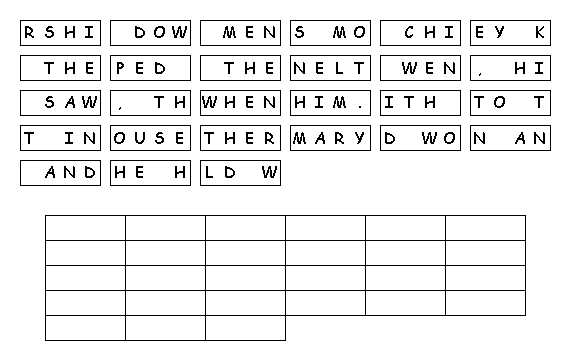

This Week: Isaiah 60:1-6, Psalm 72:1-7, 10-14, Ephesians 3:1-12, Matthew 2:1-12
Elementary School Pew-work
Use this code to decipher the bolded words:

When Bxiji ___________ was born in the village of Dxhkzxkxa ___________ in Bjsxy ___________, Kxgos ___________ was king. During this time some wise men from the east came to Bxgjiyzxa ______________ and said, "Where is the child born to be king of the Jews? We saw his star in the east and have come to worship him." When King Kxgos ___________ heard about this, he was worried, and so was everyone else in Jerusalem ___________. Kxgos ___________ brought together the chief priests and the teachers of the Law of Aoixi ___________ and asked them, "Where will the Axiicyk ___________ be born?" They told him, "He will be born in Dxhkzxkxa ___________, just as the prophet wrote, ' Dxhkzxkxa ___________ in the land of Bjsxy ___________, you are very important among the towns of Bjsxy ___________. From your town will come a leader, who will be like a shepherd for my people Cigyxz ___________.'"
Where
did the wise men go to ask
directions?
______________________________________________________________________________
Who
did Herod ask for
help?
______________________________________________________________________________
How
did they know where Jesus was
born?
______________________________________________________________________________

Created by Puzzlemaker at DiscoveryEducation.com
Next week:Isaiah 42:1-9; Psalm 29; Acts 10:34-43; Matthew 3:13-17